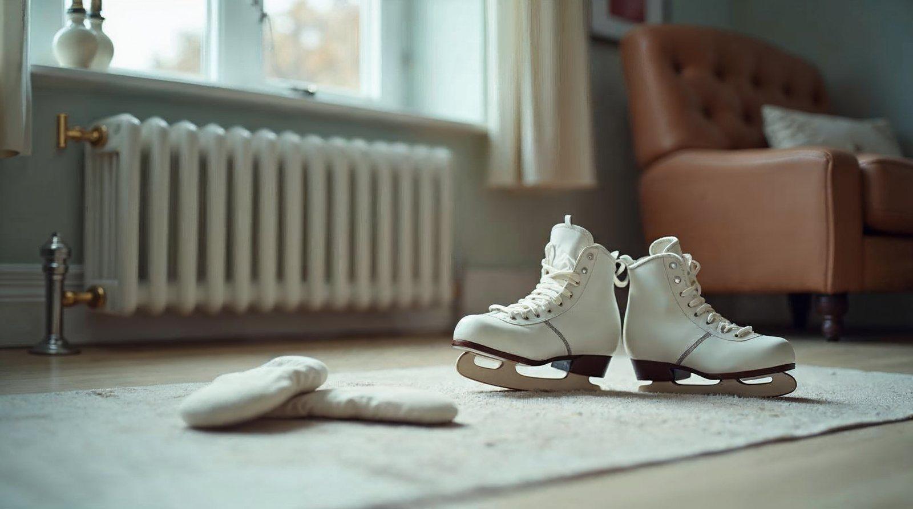
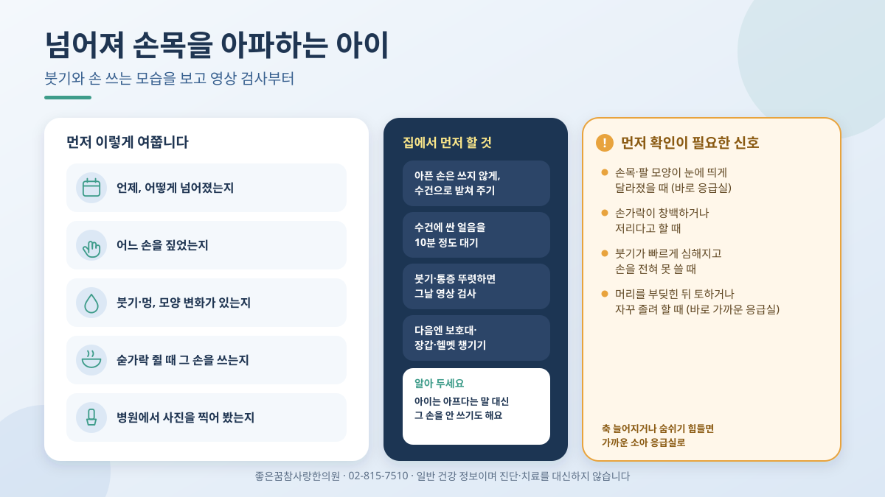

이종호 한의사 감수좋은꿈참사랑한의원 대표원장 (한의사 면허번호 19769)발행 2026-11-25 · 수정 2026-11-25
이 글의 차례
아이가 넘어지며 손을 짚은 뒤 손목을 아파한다면, 먼저 붓기와 모양을 살피고 뼈를 다치지 않았는지 영상 검사로 확인하는 것이 순서입니다. 겨울방학이면 눈썰매장과 스케이트장에서 넘어지는 일이 흔합니다. 아이는 아픈 것을 정확히 말하지 못하고 그 손을 쓰지 않는 것으로 표현하기도 해서, 보호자의 관찰이 중요합니다.
예를 들어 넘어진 직후에는 울다가 금세 다시 놀았는데, 저녁에 숟가락을 다른 손으로 쥐는 모습을 보고서야 알아차리는 경우가 있습니다.
왜 넘어진 뒤 손목을 먼저 살펴야 할까요
- 넘어질 때 반사적으로 손바닥을 짚으면 체중이 손목에 실립니다.
- 자라는 아이의 뼈는 어른과 달라 겉으로 티가 덜 나는 손상이 있을 수 있습니다.
- 장갑과 두꺼운 옷 때문에 붓기를 늦게 알아차리기 쉽습니다.
- 아이는 놀고 싶은 마음에 아픈 것을 참고 말하지 않기도 합니다.
먼저 이렇게 여쭙니다
- 언제, 어떻게 넘어졌고 어느 손을 짚었나요?
- 손목이 붓거나 멍이 들었나요? 모양이 달라 보이나요?
- 숟가락을 쥐거나 옷을 입을 때 그 손을 쓰나요?
- 만지면 유독 아파하는 자리가 있나요?
- 병원에서 사진을 찍어 보셨나요?

일상에서 먼저 해 볼 수 있는 것
- 아픈 손은 쓰지 않게 하고 수건이나 스카프로 가볍게 받쳐 주기
- 수건에 싼 얼음을 10분 정도 대어 주기
- 붓기나 통증이 뚜렷하면 그날 영상 검사가 가능한 의료기관에 가기
- 다음에는 손목 보호대와 장갑, 헬멧을 챙기기
- 넘어질 때 몸을 둥글게 마는 연습을 놀이처럼 해 보기
한의원에서 함께 살필 수 있는 경우
- 검사에서 뼈에 이상이 없다고 들은 뒤에도 뻐근함이 남는 경우 손목과 팔의 긴장을 함께 살핍니다.
- 넘어진 뒤 한동안 그 손을 덜 쓰는 경우 불편한 동작을 아이와 함께 확인합니다.
- 넘어진 뒤 잠을 설치거나 겁을 내는 경우 아이의 긴장도 이어서 여쭙니다.
좋은꿈참사랑한의원에서는 보호자와 아이의 이야기를 함께 듣고, 무엇을 하는지 아이 눈높이에서 쉬운 말로 먼저 알려 줍니다. 아이가 싫어하면 멈추고 억지로 하지 않으며, 필요하면 소아청소년과나 영상 검사가 가능한 의료기관 확인을 먼저 권합니다. 귀가 전에는 집에서 지켜볼 점과 다음에 확인할 일을 알려 드립니다.
이렇게 기록해 오시면 상담이 쉬워집니다
- 넘어진 날짜와 상황, 짚은 손
- 붓기와 멍의 변화(사진으로 남겨도 좋습니다)
- 병원에서 들은 검사 결과
- 아이가 불편해하는 동작
이런 증상은 먼저 확인이 필요합니다
- 손목이나 팔 모양이 눈에 띄게 달라진 경우(바로 응급실)
- 머리를 부딪힌 뒤 토하거나 자꾸 졸려 하는 경우(바로 응급실)
이런 신호가 있으면 한의원보다 가까운 병원이나 응급실을 먼저 찾으세요.

여쭙는 것
- 언제, 어떻게 넘어졌고 어느 손을 짚었나요?
- 손목이 붓거나 멍이 들었나요? 모양이 달라 보이나요?
- 숟가락을 쥐거나 옷을 입을 때 그 손을 쓰나요?
생활에서 해 볼 것
- 아픈 손은 쓰지 않게 하고 수건이나 스카프로 가볍게 받쳐 주기
- 수건에 싼 얼음을 10분 정도 대어 주기
- 붓기나 통증이 뚜렷하면 그날 영상 검사가 가능한 의료기관에 가기
한의원에서 함께 살필 것
- 검사에서 뼈에 이상이 없다고 들은 뒤에도 뻐근함이 남는 경우 손목과 팔의 긴장을 함…
- 넘어진 뒤 한동안 그 손을 덜 쓰는 경우 불편한 동작을 아이와 함께 확인합니다.
- 넘어진 뒤 잠을 설치거나 겁을 내는 경우 아이의 긴장도 이어서 여쭙니다.
먼저 확인이 필요한 신호
- 손목이나 팔 모양이 눈에 띄게 달라진 경우(바로 응급실)
- 머리를 부딪힌 뒤 토하거나 자꾸 졸려 하는 경우(바로 응급실)
한눈에 보는 표
| 구분 | 핵심 |
|---|---|
| 여쭙는 것 | 언제, 어떻게 넘어졌고 어느 손을 짚었나요? 손목이 붓거나 멍이 들었나요? 모양이 달라 보이나요? |
| 생활에서 해 볼 것 | 아픈 손은 쓰지 않게 하고 수건이나 스카프로 가볍게 받쳐 주기 수건에 싼 얼음을 10분 정도 대어 주기 |
| 한의원에서 함께 살필 것 | 검사에서 뼈에 이상이 없다고 들은 뒤에도 뻐근함이 남는 경우 손목과 팔의 긴장을 함께 살핍니다. 넘어진 뒤 한동안 그 손을 덜 쓰는 경우 불편한 동작을 아이와 함께 확인합니다. |
| 먼저 확인이 필요한 신호 | 손목이나 팔 모양이 눈에 띄게 달라진 경우(바로 응급실) 머리를 부딪힌 뒤 토하거나 자꾸 졸려 하는 경우(바로 응급실) |
자주 묻는 질문
하루 지켜봐도 되나요?
붓기와 통증이 뚜렷하거나 그 손을 쓰지 않으면 미루지 말고 영상 검사가 가능한 의료기관에서 확인하세요.
한의원에서 사진을 찍을 수 있나요?
뼈 손상 여부는 영상 검사가 가능한 의료기관에서 먼저 확인합니다. 그 뒤 남은 불편을 진찰하고 살핍니다.
아이가 침을 무서워해요.
무엇을 하는지 먼저 쉬운 말로 알려 주고, 싫어하면 억지로 하지 않습니다. 보호자와 함께 방법을 정합니다.
좋은꿈참사랑한의원은 재진 때 지난번 이야기부터 이어서 여쭙니다. 진료시간과 예약은 오시는 길에서 확인하세요.
어디서 상담받을 수 있나요?
좋은꿈참사랑한의원은 서울 동작구 만양로2길 2 신성빌딩 3층·5층(서울 동작구 상도동, 7호선 상도역 3번 출구 근처)에 있습니다. 한의사 3명(이종호 대표원장, 조영기 수석진료원장, 정원영 진료원장)이 진료합니다. 진료시간은 평일 09:30~20:00(점심 13:00~14:00), 토·일·공휴일 09:30~15:00이며, 방문 전 전화로 확인을 권합니다. 예약은 네이버 예약, 카카오톡 상담, 전화 02-815-7510로 받습니다.
이 글은 일반적인 건강 정보이며 개인의 진단이나 치료를 대신하지 않습니다. 증상이 있거나 복용 중인 약이 있다면 진료를 통해 확인하세요. 치료 효과는 개인마다 다를 수 있습니다.
작성 기준: 일반적으로 알려져 있는 건강 정보를 참고해 정리했습니다(대표원장 감수). 증상 기록은 1~2주 동안 하루 1회, 비슷한 시간에 적어 오시면 지난 상태와 비교하기 쉽습니다.